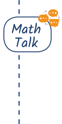
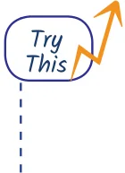
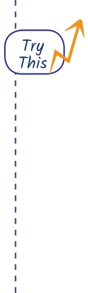

- 1.Can you recognise the pattern in each of the sequences in

Table 3?
- 2.Try and redraw each sequence in Table 3 in your notebook.
Can you draw the next shape in each sequence? Why or why not? After each sequence, describe in your own words what is the rule or pattern for forming the shapes in the sequence.
1.6 Relation to Number Sequences
Often, shape sequences are related to number sequences in surprising ways. Such relationships can be helpful in studying and understanding both the shape sequence and the related number sequence. Example: The number of sides in the shape sequence of Regular Polygons is given by the counting numbers starting at 3, i.e., 3, 4, 5, 6, 7, 8, 9, 10, .... That is why these shapes are called, respectively, regular triangle, quadrilateral (i.e., square), pentagon, hexagon, heptagon, octagon, nonagon, decagon, etc., respectively. The word ‘regular’ refers to the fact that these shapes have equal-length sides and also equal ‘angles’ (i.e., the sides look the same and the corners also look the same). We will discuss angles in more depth in the next chapter. The other shape sequences in Table 3 also have beautiful relationships with number sequences.
Figure it Out
- 1.Count the number of sides in each shape in the sequence

of Regular Polygons. Which number sequence do you get? What about the number of corners in each shape in the sequence of Regular Polygons? Do you get the same number sequence? Can you explain why this happens?
- 2.Count the number of lines in each shape in the sequence
of Complete Graphs. Which number sequence do you get? Can you explain why?
- 3.How many little squares are there in each shape of the
sequence of Stacked Squares? Which number sequence does this give? Can you explain why?
- 4.How many little triangles are there in each shape of the

sequence of Stacked Triangles? Which number sequence does this give? Can you explain why? (Hint: In each shape in the sequence, how many triangles are there in each row?)
- 5.To get from one shape to the next shape in the Koch
Snowflake sequence, one replaces each line segment ‘ - ’ by a ‘speed bump’ . As one does this more and more times, the changes become tinier and tinier with very very small line segments. How many total line segments are there in each shape of the Koch Snowflake? What is the corresponding number sequence? (The answer is 3, 12, 48, ..., i.e., 3 times Powers of 4; this sequence is not shown in Table 1.)
Mathematics may be viewed as the search for patterns and for the explanations as to why those patterns exist. Among the most basic patterns that occur in mathematics are number
sequences.
Some important examples of number sequences include the counting numbers, odd numbers, even numbers, square numbers, triangular numbers, cube numbers, Virahānka numbers, and powers of 2. Sometimes number sequences can be related to each other in beautiful and remarkable ways. For example, adding up the sequence of odd numbers starting with 1 gives square numbers. Visualising number sequences using pictures can help to understand sequences and the relationships between them. Shape sequences are another basic type of pattern in mathematics. Some important examples of shape sequences include regular polygons, complete graphs, stacked triangles and squares, and Koch snowflake iterations. Shape sequences also exhibit many interesting relationships with number sequences.